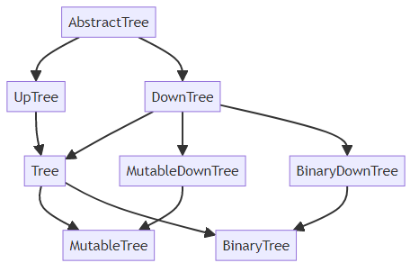

Usage¶
Abstract tree classes¶
Downtrees are trees that have links to their direct children. Uptrees are trees that link to their parent. A Tree has links in both directions.
ABC |
Inherits from |
Abstract Methods |
Mixin Methods |
|---|---|---|---|
|
|
||
|
|
|
|
|
|
|
|
|
|
|
|
|
|
|
|
|
|
|
|
|
|
|
|
|
|
In your own code, you can inherit from these trees. For example, if your tree only has links to children:
import abstracttree
from abstracttree import print_tree
class MyTree(abstracttree.DownTree):
def __init__(self, value, children=()):
self.value = value
self._children = children
def __str__(self):
return "MyTree " + str(self.value)
@property
def children(self):
return self._children
You can now use this class in the following way to generate output:
tree = MyTree(1, children=[MyTree(2), MyTree(3)])
print_tree(tree)
# MyTree 1
# ├─ MyTree 2
# └─ MyTree 3
Adapter¶
In practice, not all existing tree data structures implement one of the abstract classes specified in Abstract classes.
As a bridge, you can use Tree.convert to convert these trees to a Tree instance.
However, whenever possible, it’s recommended to inherit from Tree directly for minimal overhead.
Tree.convert already does the right thing on many objects of the standard library:
# Inheritance hierarchy
Tree.convert(int)
# Abstract syntax tree
Tree.convert(ast.parse("1 + 1 == 2"))
# Filesystem
Tree.convert(pathlib.Path("abstracttree"))
# Zipfile
Tree.convert(zipfile.ZipFile("eclipse.jar"))
# Nested list
Tree.convert([[1, 2, 3], [4, 5, 6]])
It can also construct a tree by ducktyping on parent and children attributes:
# Works on objects by anytree, bigtree and littletree
Tree.convert(anytree.Node('node'))
Alternatively, you can use astree and explicitly specify how to find children and parent:
# Tree from json-data
data = {"name": "a",
"children": [
{"name": "b", "children": []},
{"name": "c", "children": []}
]}
astree(data, children=operator.itemgetter["children"])
# pyqt.QtWidget
astree(widget, children=lambda w: w.children(), parent = lambda w: w.parent())
# Tree from treelib
astree(tree.root, children=lambda nid: tree.children(nid), parent=lambda nid: tree.parent(nid))
# itertree
astree(tree, children=iter, parent=lambda t: t.parent)
# Infinite binary tree
inf_binary = astree(0, children=lambda n: (2*n + 1, 2*n + 2))
Traversal¶
There are 3 common ways to traverse a tree:
- Pre-order
The parent is iterated over before its children.
- Post-order
The children are iterated over before their parent.
- Post-order
Nodes closer to root are iterated over before nodes further from the root.
All these are possible by writing one of:
for node, item in tree.nodes.preorder():
...
for node, item in tree.nodes.postorder():
...
for node, item in tree.nodes.levelorder():
...
These methods return an item in addition to a node. This item is a tuple of the following fields:
- depth
This indicates how deep the node is relative to the root of the (sub)tree iterated over. The root of the (sub)tree always has depth 0. To find the absolute depth of a node, use
node.ancestors.count().- index
The index of this node among its siblings in relation to its direct parent. The first child of a parent gets index 0, the second gets index 1. The root of the (sub)tree always gets an index of
0even if it has prior siblings.
To iterate over the descendants (the nodes without the root), similar methods are defined:
for descendant, item in tree.descendants.preorder():
...
If the order of iteration doesn’t matter an alternative way to iterate is as follows:
for node in tree.nodes:
...
for descendant in tree.descendants:
...
Export¶
Pretty printing:
print_tree(Path())
# .
# ├─ abstracttree
# │ ├─ abstracttree\conversions.py
# │ ├─ abstracttree\export.py
# │ ├─ abstracttree\predicates.py
# │ ├─ abstracttree\treeclasses.py
# │ └─ abstracttree\__init__.py
# ├─ LICENSE
# ├─ Makefile
# ├─ manual.txt
# ├─ pyproject.toml
# ├─ README.md
# └─ tests
# ├─ tests\test_downtree.py
# ├─ tests\test_export.py
# ├─ tests\test_mutabletree.py
# ├─ tests\test_tree.py
# ├─ tests\test_uptree.py
# └─ tests\tree_instances.py
Plotting with matplotlib:
import matplotlib.pyplot as plt
plot_tree(ast.parse("y = x*x + 1"))
plt.show()

Export to graphviz:
tree = astree(seq, children=lambda x: [x[:-2], x[1:]] if x else [])
to_graphviz(tree)
Export to mermaid:
to_mermaid(str)
Export to latex:
data = [["james", "steve"],
["patrick", "mike", "bod", "piet"]]
to_latex(data)